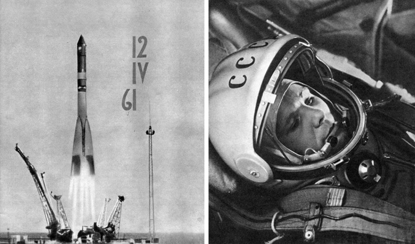

Первый Космический Корабаль полетел
12 аплеля 1961 года, это был Восток-1
, на нём полетел в космос
Юрий Гогарин
.

Он Первый Человек в Истории, который полетел в Космос,
Запуск Состоялся с Космодрома Байканур в 9 часов 7 минут,
длительность его полёта составила 106 минут,
его полёт прошёл за два земных дня с 12 апреля 1961 года по 14 апреля,
Он получил воинское звание майора ВВС, лётный знак Военный лётчик 1-го класса,
почётное звание Лётчик-космонавт СССР. От Правительства Гагарин получил легковой автомобиль Волга, четырёхкомнатную квартиру по месту службы и денежную премию
Кто первым должен лететь в космос?
У Главного конструктора Особого конструкторского бюро № 1 Госкомитета Совета Министров СССР по оборонной технике С. П. Королёва и его сподвижников сомнений не вызывало —
это должен быть лётчик реактивной истребительной авиации.
С учётом особенностей и возможностей космической техники
понадобились особые кандидаты — люди абсолютно здоровые, профессионально подготовленные, дисциплинированные,
возраст — около 30 лет, рост — не более 170 см, вес — до 68—70 кг.
В первом отряде космонавтов обозначились два лидера —
Юрий Гагарин и Герман Титов.
3 апреля 1961 года состоялось заседание Президиума ЦК КПСС, которое проводил Н. С. Хрущёв. По докладу заместителя Председателя Совета Министров СССР Д. Ф. Устинова Президиум ЦК принял решение о запуске человека в космос.
8 апреля 1961 состоялось заседание Государственной комиссии по пуску космического корабля «Восток», которую возглавлял Председатель Государственного комитета Совета Министров СССР по оборонной технике К. Н. Руднев. Комиссия утвердила первое в истории задание человеку на космический полёт, подписанное С. П. Королёвым и Н. П. Каманиным:
«Выполнить одновитковый полёт вокруг Земли на высоте 180—230 километров, продолжительностью 1 час 30 минут с посадкой в заданном районе. Цель полёта — проверить возможность пребывания человека в космосе на специально оборудованном корабле, проверить оборудование корабля в полёте, проверить связь корабля с Землёй, убедиться в надёжности средств приземления корабля и космонавта».
После открытой части заседания комиссия осталась в узком составе и утвердила предложение
Н. П. Каманина допустить в полёт Юрия Гагарина, а Титова утвердить как запасного космонавта.
10 апреля в Ленинске прошла неофициальная встреча космонавтов и конструкторов с советскими военачальниками.